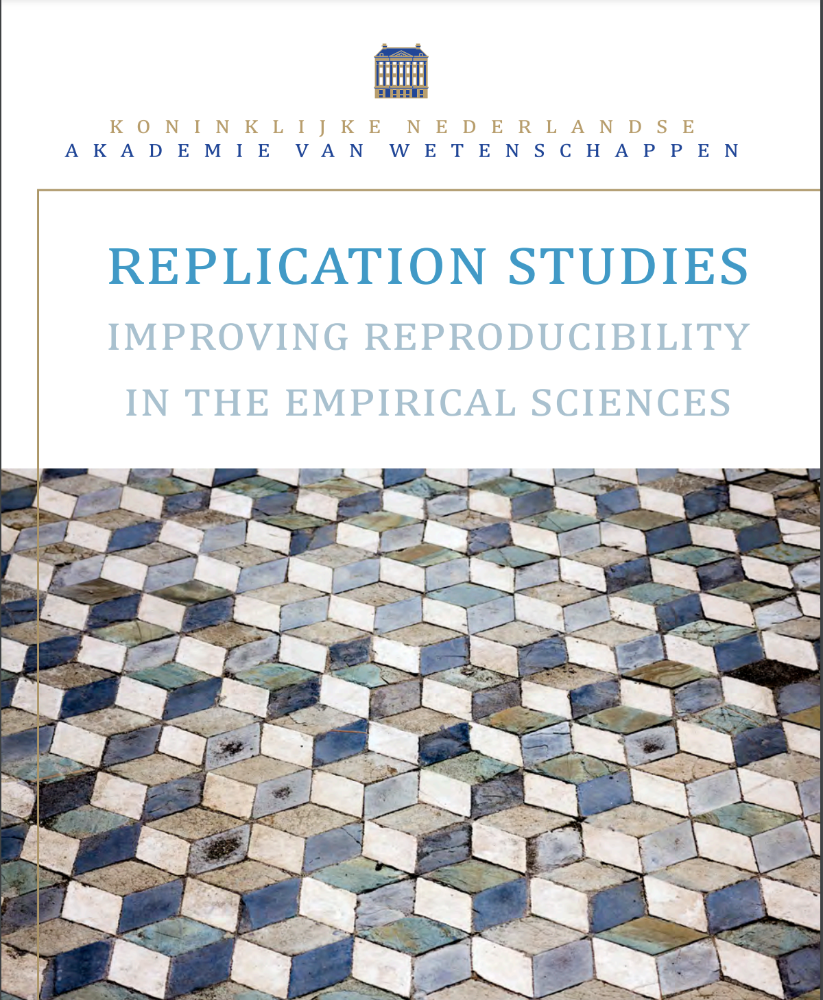

On Thursday June 24, 13:00-14:00, we kicked off the NSC-R Workshop initiative. The topic of this first meeting was reproducibility, which is about how to organize your research workflow to create documented code and reproducible findings. The focus was not on why (we should know), but on practical guidelines on how to do it. It was presented by Thomas de Graaff.
Here you find the presentation
To prepare for the first meeting, Thomas de Graaff suggested you might want to take a look at the following links. This is obviously not mandatory, but the materials may give rise to ideas or questions that you may want to discuss in the workshop meeting:
A very readable post on reproducible workflow in R.
A nice short blog post about R projects.
If you are using R already and in particular if you use tidyverse, a long book-down document about coding style conventions.
A wonderful but distressing lecture (and long: about 50 minutes) from Richard McElreath about working with software in the social sciences, with a criminology paper example in the end on racial disparity in police use of deadly force. Click this YouTube link.
You may also want to consult this textbook:
Gandrud, C. Reproducible Research with R and RStudio, Second edition. Click to download the PDF
Thomas de Graaf is associate professor at the department of Spatial Economics at the Vrije Universiteit in Amsterdam.
For attribution, please cite this work as (Graaf 2021)